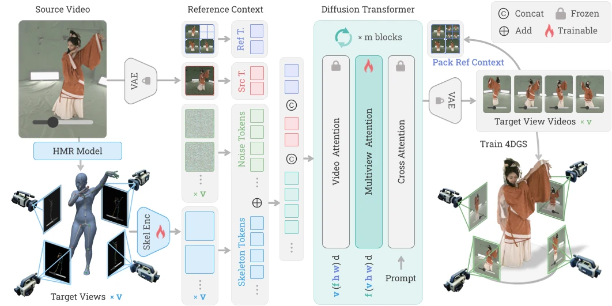

4DAnyone: Create Anyone in 4D from a Casual Monocular Video
4DAnyone reconstructs 4D humans from casual monocular video by generating multiview-consistent videos and lifting them into 4D Gaussian Splatting.
- 3D Vision
- 3D Reconstruction
- Video Generation
- Video Diffusion